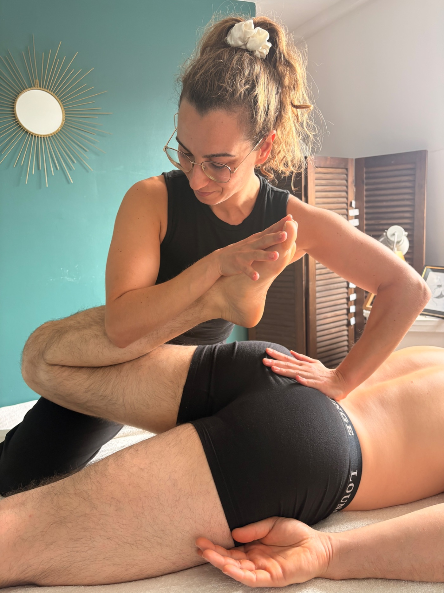

Ce sont des semaines d’entraînement, des kilomètres qui s’accumulent, des séances parfois difficiles… et forcément, un corps qui est beaucoup sollicité.
À l’approche du Marathon de Lille, on pense naturellement à son entraînement, ses chaussures, son alimentation ou encore à l’organisation du jour de la course. Mais on pense parfois moins à ce qui se passe entre les séances.
Et si la préparation et la récupération faisaient elles aussi partie de la préparation du marathon ?
Le massage sportif : un complément à la préparation
Pendant une préparation marathon, les muscles et les articulations sont régulièrement sollicités et peuvent devenir plus tendus, fatigués et la récupération se fait de plus en plus difficilement.
Le massage sportif peut trouver sa place dans cette période, en complément de l’entraînement, du repos, du sommeil, de l’hydratation et de l’alimentation.
L’objectif n’est pas de remplacer le travail de l’entraîneur ou du professionnel de santé, ni de chercher à « réparer » le corps à chaque séance.
Il s’agit plutôt d’offrir au corps un accompagnement supplémentaire et de prendre régulièrement le temps d’écouter ses sensations.
Avant le marathon : accompagner la préparation
On associe souvent le massage sportif à la récupération après l’effort. Pourtant, il peut également être intéressant pendant la préparation. Un suivi en préparation sportive permet de prendre en compte l’évolution de l’entraînement et les sensations du coureur au fil des semaines.
Le travail peut ainsi être adapté selon la période : certaines séances seront davantage orientées vers la récupération, d’autres vers les zones particulièrement sollicitées. Et surtout, cela permet de ne pas attendre d’avoir mal pour commencer à s'intéresser à son corps.
Après le marathon : penser à la récupération
Une fois la ligne d’arrivée franchie, l’aventure n’est pas tout à fait terminée ! Le corps vient de fournir un effort important et mérite lui aussi qu’on lui accorde un peu de temps.
Le massage de récupération sportive peut accompagner cette période, toujours en complément des éléments essentiels que sont le repos, l’hydratation et une bonne alimentation. C’est aussi l’occasion de ralentir après plusieurs mois passés à courir vers un objectif.
Pourquoi proposer un suivi plutôt qu’un simple massage ?
C’est justement cette idée qui m’a donné envie de créer mon Pack Prépa & Recovery à l’occasion du Marathon de Lille. Plutôt que de considérer le massage comme une séance isolée, j’avais envie de proposer une véritable continuité : accompagner le coureur pendant sa préparation, puis l’aider à prendre soin de sa récupération après la course.
- 3 séances de préparation : du massage sur mesure, ciblé, du stretching au sol et un focus sur les pieds du coureur.
- 2 séances de récupération : de la pressothérapie, un temps de sudation en mini hammam pour éliminer les toxines, un massage récup' et un soin relax complet aux pierres chaudes.
Ces 5 séances sont programmées en amont, pour une tranquillité d'esprit. Pour que tout se déroule de manière sereine pour vous comme pour moi.
C’est dans cet esprit que j’ai imaginé le Pack Prépa & Recovery chez HominiSens : accompagner les coureurs du Marathon de Lille avant et après leur course, avec des séances adaptées à leur parcours et simplement pour prendre soin de soi pendant cette belle aventure.
Contactez moi avant le 1e octobre pour bénéficier des packs encore disponibles !
A bientôt
massage sportif Lillemassage sportif Marathon de Lillemassage récupération sportive Lillemassage coureurMarathon de Lille